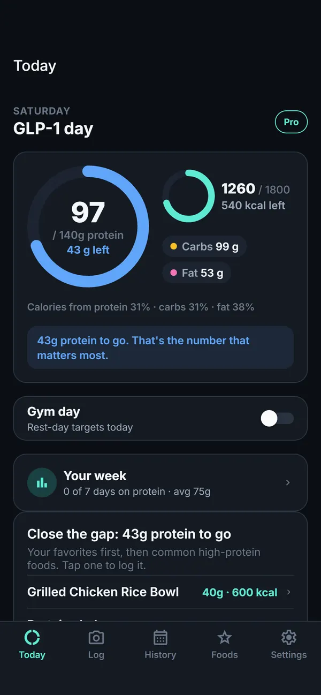
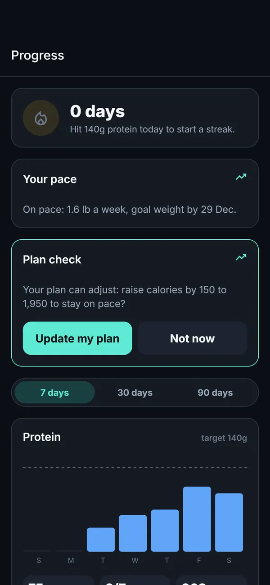
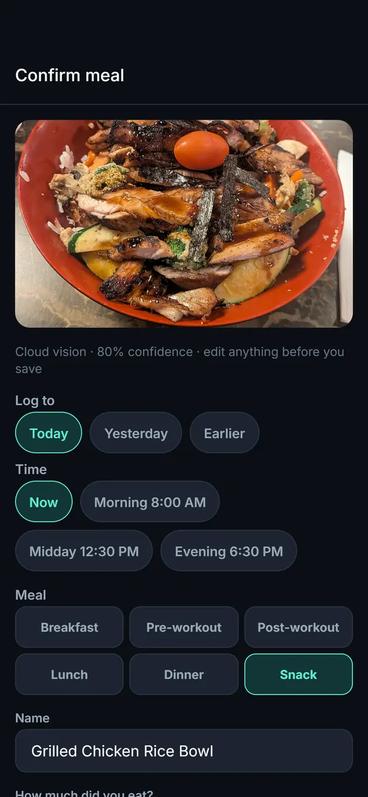
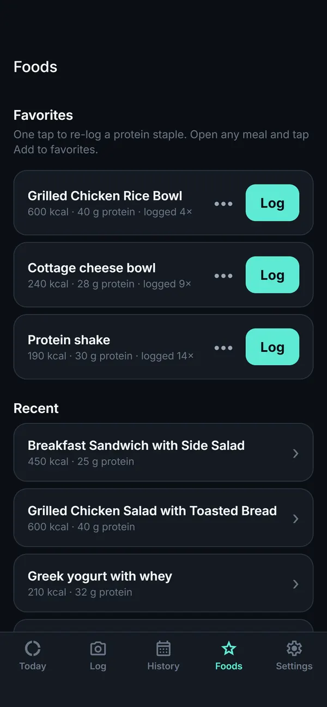
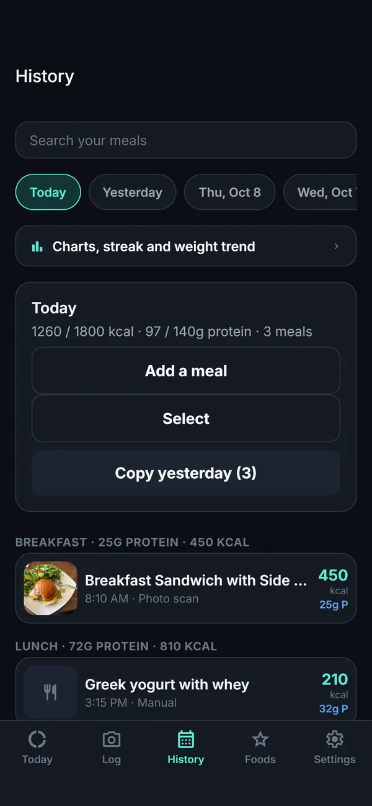

Eat less. Hit your protein. Just snap a photo.
PlateShot is the photo calorie and macro logger built for life on GLP-1 medication. Snap your meal, see calories and protein in seconds, and know how much protein you still need today.

From plate to protein in three steps
No weighing food. No searching a database for ten minutes.
Snap your meal
Take a photo of your plate, pick one from your library, or scan a barcode or nutrition label.
Confirm the numbers
PlateShot estimates calories, protein, carbs and fat. Edit anything before you save.
See what is left
Your Today screen shows protein first, then calories, so a small appetite still gets the nutrition it needs.
Everything you need, nothing you do not
A calm, fast logger that fits real days, including the low-appetite ones.
Photo logging
Snap a meal and get calories, protein, carbs and fat. You always get to edit before saving.
Protein-first target
Your daily protein goal leads the screen, with a close-the-gap list of foods to hit it.
Water tracking
Log water with a tap. Staying hydrated matters when you are eating less.
Weight from Apple Health
Optional. PlateShot reads your latest weight and can save your meals and water to Apple Health.
GLP-1 shot day and side effects
Note your shot day and how you feel. It stays on your phone, as a reminder for you.
Widgets, barcode and label scan
See your protein from the Home Screen, and scan a barcode or Nutrition Facts label for exact numbers.

Small plates. Real protein.
On Ozempic, Wegovy, Mounjaro or Zepbound, you eat less, and every bite counts. PlateShot keeps your eye on protein, so you can protect the muscle you are working to keep.
- Protein target and calories side by side, protein first
- A close-the-gap list built from your own favorites
- Shot-day notes and side-effect check-ins
- Weekly view of how many days you hit your protein
PlateShot is not a medical device and does not give medical advice. Calorie and macro numbers are estimates. Talk to your doctor or pharmacist about your medication and your diet. PlateShot is not affiliated with the makers of any medication.
A look inside
Swipe through the app.



Your log stays yours
No account. No ads. No tracking.
On your phone. Meals, photos, water and targets are stored on your device. We cannot see them.
Your own iCloud. An optional backup goes to your private iCloud, so a new phone is easy. You can turn it off.
Photos only for the estimate. The app asks first. A photo is sent only to work out calories and macros, and it is not kept.
No ads, no analytics. We do not sell your information. Apple Health is optional and stays on your iPhone.
Read the full Privacy Policy.
Common questions
Quick answers about estimates, Pro and your data.
How accurate are the photo estimates?
They are estimates. Every photo log opens a confirm screen where you can edit calories, protein, carbs and fat before saving. For packaged food, the label is always more accurate, and you can enter those numbers by hand.
I would rather not use the camera. Can I still log?
Yes. Choose a photo from your library, or tap Enter manually and type the meal in. Favorites and Recents let you log a repeat meal in one tap.
How do I change my calorie and protein targets or my units?
Open Settings. You can change your daily targets and switch between imperial and metric there.
What does PlateShot Pro include?
Pro removes the limit on photo estimates, unlocks your history beyond the last 7 days, and adds CSV export of your log. JSON backup is free, and everything else in the app is free.
I paid for Pro but the app does not show it.
Open Settings and tap Restore purchases, signed in to the same Apple Account you bought with. The same button is on the paywall.
How do I cancel my subscription?
Subscriptions are managed by Apple. On your iPhone open Settings, tap your name, then Subscriptions, then PlateShot. Deleting the app does not cancel a subscription.
How do I delete my data?
Open Settings and tap Delete all data. This erases meals, favorites and goals on that device, and the iCloud backup copy too. Your log is never stored on a server, and photos sent for an estimate are not kept, so there is nothing else to remove.
I got a new phone. Where is my log?
Your log lives on the device it was created on. If iCloud backup is on in Settings, you can restore it on your new phone. You can also make a free JSON backup from Settings before you switch, so you keep a copy.
Support
Need help? Email us and we aim to reply within a few days.
temveno@gmail.comPlateShot is not a medical device and cannot give medical advice. Talk to your doctor or pharmacist about your medication and your diet.